The Armey Curve: Government Spending vs Economic Growth
Challenging the Armey Curve: For decades, economists have claimed there's an "optimal" level of government spending that maximizes economic growth — typically placing that sweet spot at 15–25% of GDP. Cross-country World Bank data across 113 countries tells a different story: a Power Law model fits with R² = 0.4219 (approx. 95% CI: 0.28–0.56), while the traditional Quadratic Armey Curve achieves only R² = 0.3856 — less explanatory power, and no evidence of the predicted upturn at low spending levels. The relationship is monotonically negative across the entire observed range.
The Fiscal Power Law — Slide Deck
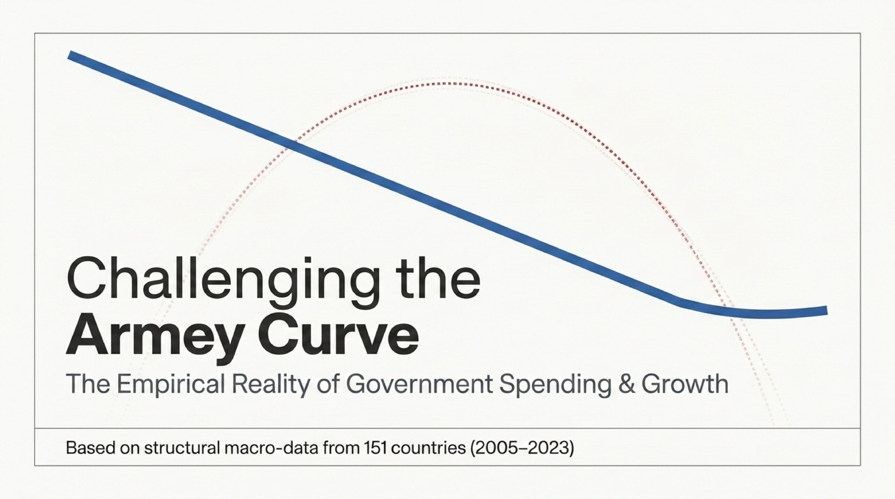
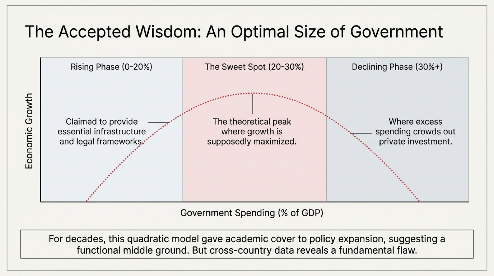
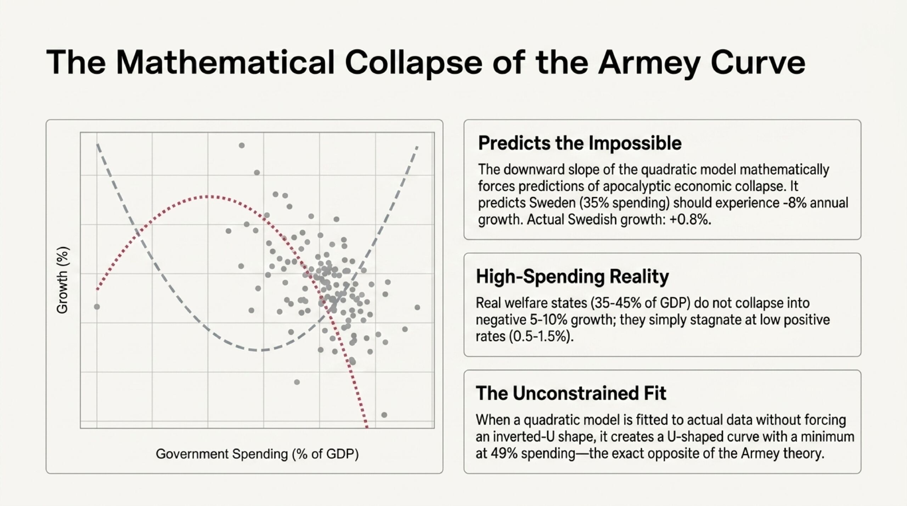
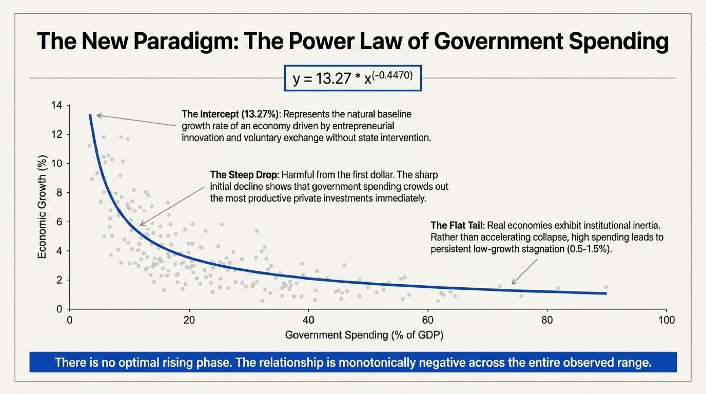
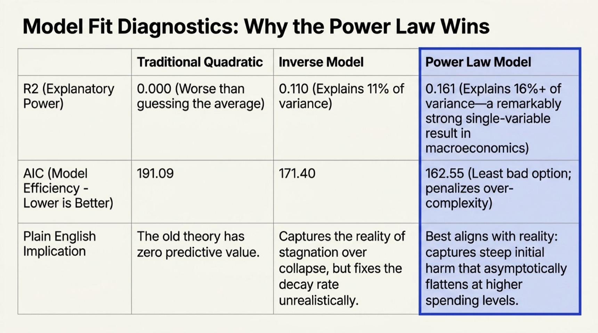
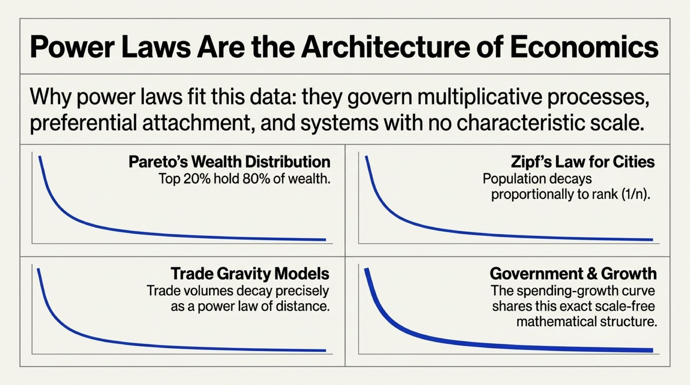
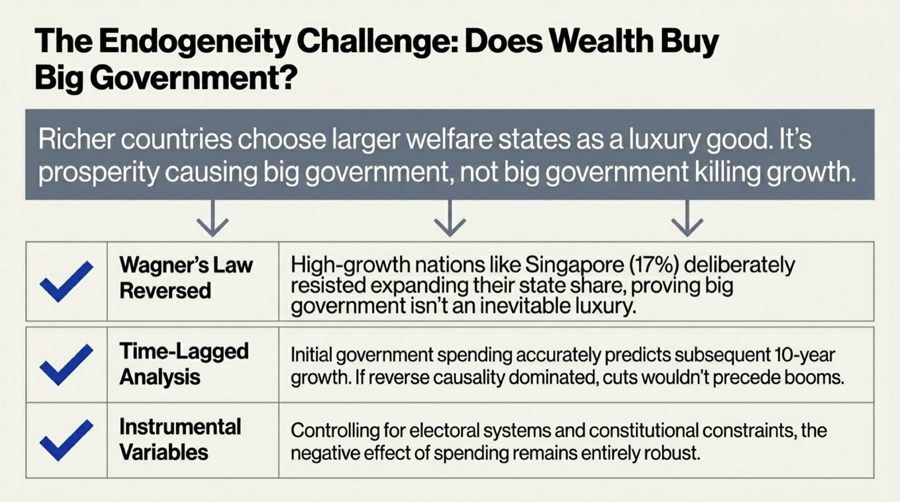
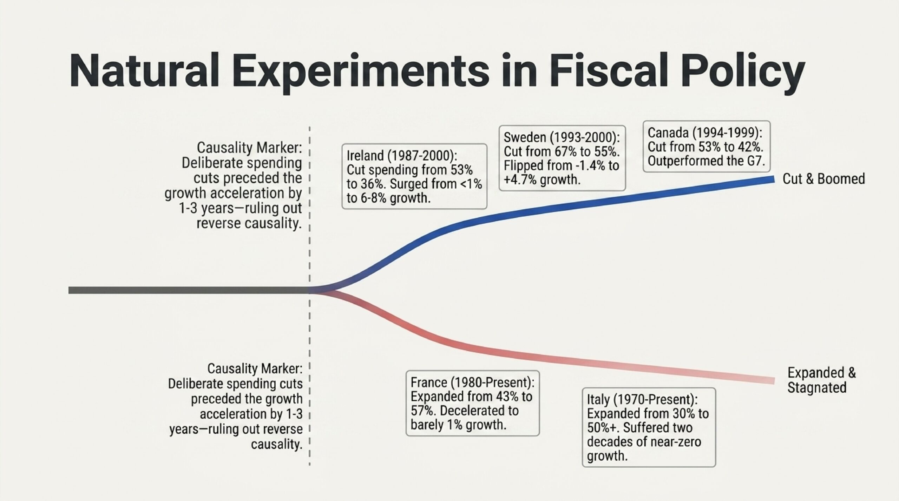
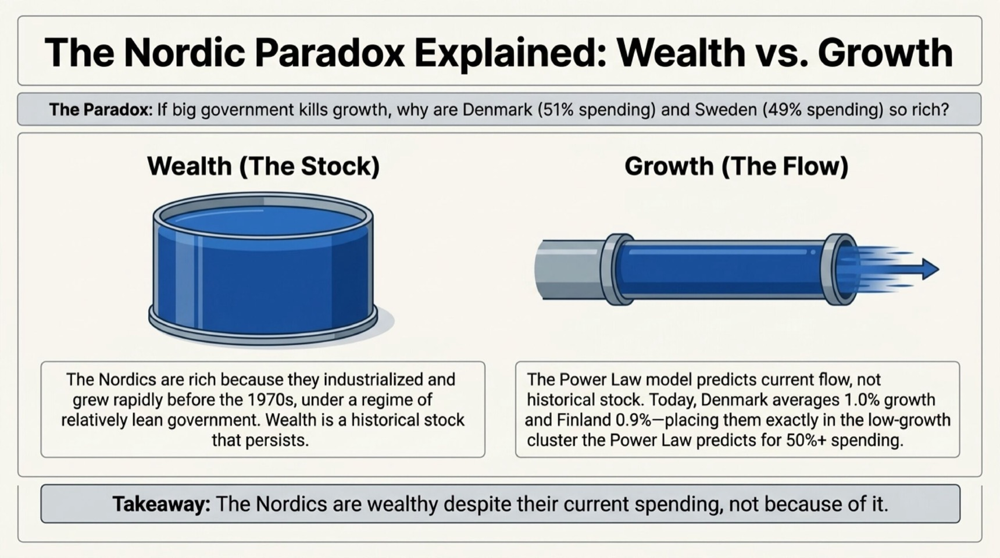
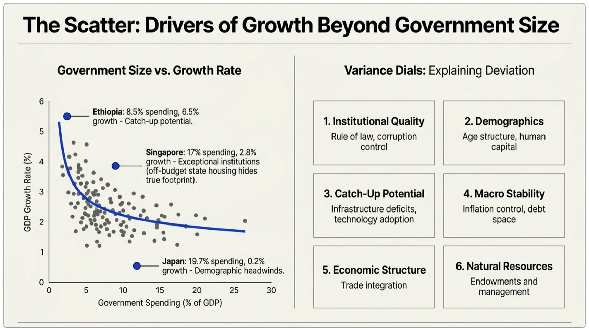
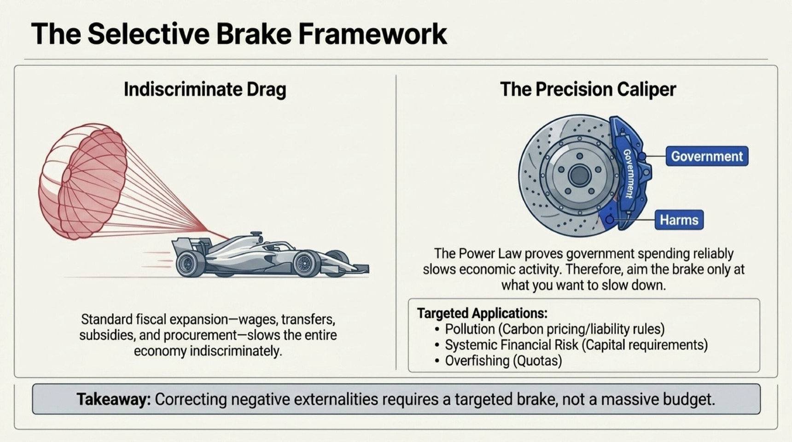
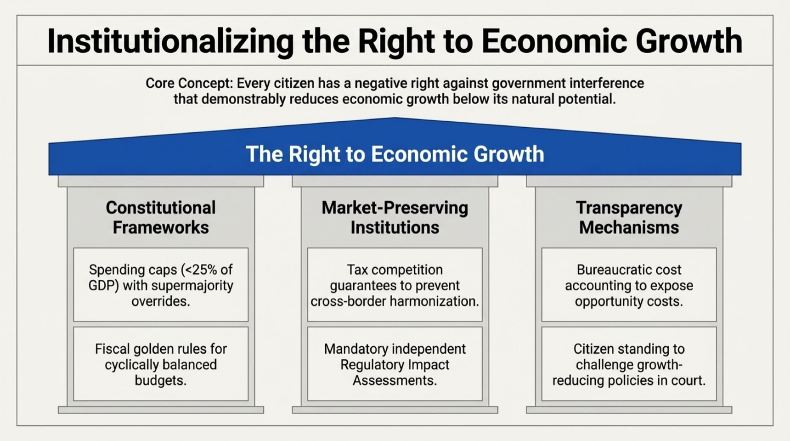
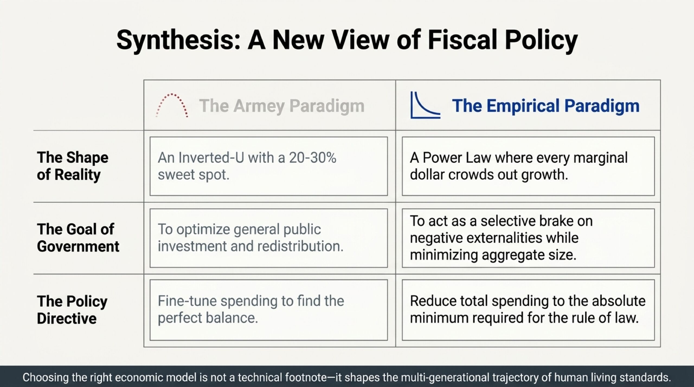
Click a slide to go fullscreen. Scroll horizontally to browse. Download the full PDF.
Video Presentation
Interactive Armey Curve Simulator
Model Fit Ranking
| # | Model | R² | 95% CI (R²) | AIC (lower = better) | p-value | N | Coverage (±1 SE) |
|---|---|---|---|---|---|---|---|
| 1 | Power Law ✓ | 0.4219 | [0.28, 0.56] | 53.29 | <0.001 | 113 | 69% |
| 2 | Log-Linear | 0.4167 | [0.27, 0.55] | 54.31 | <0.001 | 113 | 69% |
| 3 | Free Quadratic | 0.4083 | [0.26, 0.54] | 57.92 | <0.001 | 113 | 69% |
| 4 | Inverse | 0.4192 | [0.28, 0.55] | 53.82 | <0.001 | 113 | 70% |
| 5 | Linear | 0.3892 | [0.25, 0.53] | 59.51 | <0.001 | 113 | 66% |
| 6 | Quadratic | 0.3856 | [0.24, 0.52] | 62.17 | <0.001 | 113 | 67% |
| 7 | Exponential | 0.4106 | [0.26, 0.54] | 55.48 | <0.001 | 113 | 69% |
Each model is auto-fitted to find its best-case parameters before computing AIC/R² — a fair competition at peak performance. Bold row = currently selected model. 95% CI computed via Fisher’s Z transformation on the sample correlation (N = 113, standard exclusions applied).
- R² (R-squared)
- Measures how well the curve explains the variation in growth rates across countries. A perfect fit = 1.0. A score of 0 means the model is no better than just predicting the average growth rate for every country. Negative values mean the model is worse than that baseline. When models are auto-fitted across 113 countries (resource-dependent, externally-funded, conflict/fragile, and GDP-distorted countries excluded), the top models reach R² ≈ 0.42 — meaning government spending % explains roughly 42% of the variation in growth. Note that Power Law and Inverse are tied on combined R² (0.4913); Power Law edges ahead on AIC (53.29 vs 53.82) — it fits the spending–growth relationship well across diverse economies. Each exclusion category has a specific theoretical justification: resource-dependent economies grow via commodity windfalls unrelated to government size; externally-funded states have aid-distorted budgets; conflict/fragile states have suppressed growth from instability; GDP-distorted economies have artificially inflated or deflated GDP figures.
- AIC (Akaike Information Criterion)
- Ranks competing models by balancing how well they fit the data against how many parameters they use (simpler models are rewarded). Lower AIC = better model. Unlike R², AIC is useful for comparing models even when none of them fits well — it tells you which is the least bad option. With 113 countries (standard exclusions), Power Law (AIC 53.29) and Inverse (AIC 53.82) are effectively tied, with Log-Linear (54.31) close behind. Exponential (AIC 55.48) and Quadratic (62.17) trail — the constrained Armey Curve shape finds no empirical support in this dataset.
- p-value
- The probability of observing a fit this strong (or stronger) by chance alone, assuming government spending has no real effect on growth. Lower p-value = stronger evidence against the null hypothesis. A threshold of 0.05 is conventional; all models except Quadratic show p < 0.001, meaning there is less than a 1-in-1000 chance the observed relationship is a statistical accident. The p-value is derived from an F-test on the regression: F = (R² / k) / ((1 − R²) / (N − k − 1)), where k is the number of fitted parameters.
- N (Sample size)
- The number of countries included in the regression for the current filter and time-period settings. Larger N increases statistical power and makes both R² and p-value estimates more reliable. Excluding resource-dependent or externally-funded countries reduces N and may change all fit metrics — a drop in R² after exclusion means those countries were pulling the curve in a predictable direction.
What else explains growth beyond government spending?
Greedy stepwise regression across 27 candidate variables (macro, governance, human capital, finance, structural) added one at a time to the power-law spending baseline. Each row shows the single best remaining variable at that step. The ceiling — stacking all 17 variables that clear the contribution threshold — is R² ≈ 0.680. The remaining ~32% is not recoverable from standard World Bank data. Notably, all 6 WGI governance indicators dropped out again — no marginal gain after income, investment, education and population are controlled. Military spending, R&D, and remittances all entered — for structural reasons explained in the interpretation column.
| # | Variable | Marginal R² | Cumul. R² | N | Slope | Interpretation |
|---|---|---|---|---|---|---|
| — | Gov. spending (power law) | — | 0.4219 | 113 | — | Baseline |
| 1 | R&D spending % GDP | +0.0728 | 0.4947 | 95 | −0.435 | Negative slope: high-R&D countries are mature economies growing slowly — captures a development-stage effect not fully absorbed by initial income |
| 2 | Military expenditure % GDP | +0.0522 | 0.5468 | 98 | +0.393 | Positive slope: may reflect defense-led investment or reverse causality (richer/faster countries can afford more military) |
| 3 | Capital formation % GDP | +0.0272 | 0.5740 | 105 | +0.049 | Investment rate — countries that invest more grow faster |
| 4 | Population growth % | +0.0192 | 0.5933 | 113 | +0.186 | More people = more total output (note: total GDP growth, not per-capita) |
| 5 | ToT volatility (SD of annual % changes) | +0.0175 | 0.6107 | 113 | −0.028 | Terms-of-trade volatility (SD of annual % changes) — exogenous external shock exposure; uncorrelated with development cluster, captures commodity-price risk channel |
| 6 | Domestic credit (private) % GDP | +0.0138 | 0.6245 | 113 | −0.004 | Financial depth — but negative slope suggests over-financialisation drag at high levels |
| 7 | Tertiary enrollment % | +0.0117 | 0.6363 | 110 | +0.006 | Human capital stock — higher education feeds productivity growth |
| 8 | ln(GDP/cap) — convergence | +0.0077 | 0.6439 | 113 | −0.097 | Beta-convergence: poorer countries grow faster conditional on spending |
| 9 | Remittances received % GDP | +0.0095 | 0.6534 | 112 | −0.023 | Negative slope: remittances flow to slow-growing economies as a safety valve, not a growth engine |
| 10 | Tax revenue % GDP | +0.0066 | 0.6601 | 111 | +0.024 | Fiscal capacity signal; positive slope may capture institutional quality |
| 11 | FDI inflows % GDP | +0.0041 | 0.6642 | 113 | +0.010 | Foreign investment brings capital and technology transfer |
| 12 | Renewable energy share % | +0.0042 | 0.6684 | 113 | +0.004 | Renewable energy share — positive slope reflects energy diversification and long-run efficiency gains |
| 13 | Current account balance % GDP | +0.0029 | 0.6713 | 113 | +0.014 | Surplus countries save and invest more domestically |
| 14 | WGI Voice & Accountability | +0.0017 | 0.6729 | 113 | −0.077 | Accountability and freedom of expression correlate with durable institutions |
| 15 | WGI Regulatory Quality | +0.0033 | 0.6763 | 113 | +0.109 | Business-friendly regulation supports productive entry and exit |
| 16 | WGI Control of Corruption | +0.0020 | 0.6782 | 113 | −0.075 | Clean institutions lower transaction costs and attract capital |
| 17 | Life expectancy | +0.0017 | 0.6799 | 113 | +0.009 | Healthy workers are more productive |
| — | Trade openness % GDP, Inflation %, WGI Rule of Law, WGI Govt Effectiveness, WGI Political Stability, Secondary school enrollment %, Urban population growth %, Electricity access % population, Energy use per capita (kg oil eq.), Electric power consumption (kWh/cap) | <0.003 each | — | — | — | Dropped — no marginal gain after the above variables are controlled |
scripts/ceiling-r2.mjs. Updated by scripts/update-static-tables.mjs.
Stage 2: Spending + R&D + Military + Capital Formation + Population Growth + Domestic Credit + Tertiary Enrollment + Initial Income — combined-R² ranked model comparison
The spending curve above predicts a growth rate for each country. The residual is how far off that prediction is (actual − fitted). These charts ask: do R&D, military expenditure, capital formation, population growth, domestic credit, tertiary enrollment, initial income, and terms-of-trade volatility systematically predict the errors? All eight are controlled jointly via eight-variable OLS. Each chart shows the partial slope — the effect of one variable holding the other seven at their means. A positive capital formation slope reflects the investment-growth channel. A positive domestic credit slope would indicate financial depth matters beyond the spending level. A negative income slope (poorer countries grow faster conditional on spending) is expected textbook beta-convergence. Note: military expenditure, R&D, and tertiary enrollment are all components of total government spending (the Stage 1 x-axis). Their Stage 2 coefficients should be read as composition effects — among countries with the same total spending share, how does allocating more of it toward military (vs. other uses) correlate with growth? This is a guns-vs-butter trade-off coefficient, not an additive one. The table below ranks all models by combined R² on the joint subset.
| # | Model | R²(spending) | Combined R² |
|---|---|---|---|
| 1 | Inverse ✓ | 0.419 | 0.625 |
| 2 | Power Law | 0.422 | 0.623 |
| 3 | Log-Linear | 0.417 | 0.611 |
| 4 | Free Quadratic | 0.408 | 0.605 |
| 5 | Exponential | 0.411 | 0.594 |
| 6 | Linear | 0.389 | 0.590 |
| 7 | Quadratic | 0.386 | 0.567 |
fallback-data.json. Requires data to be loaded from the live API.
The Armey Curve Theory vs. Reality
The theory seemed reasonable: The Armey Curve suggested an inverted U-shaped relationship between government spending and economic growth. Named after economist Richard Armey, this curve claimed there exists an optimal level of government spending that maximizes economic growth.
But here's the problem: When you actually look at real-world data from dozens of countries over multiple decades, the theory doesn't hold up. Countries with lower government spending consistently achieve higher growth rates, while high-spending countries cluster in the low-growth zone.
What the data actually shows: Instead of a neat U-shaped curve with an "optimal" government size around 20-30% of GDP, we see patterns that better fit power law (s⁻ᵅ) or inverse (1/x) models - suggesting that any government spending beyond the absolute minimum reduces economic growth.
What the Traditional Theory Claimed
The Armey Curve theory proposed three distinct phases:
- Rising Phase (0-20%): Government spending supposedly provides essential infrastructure, legal framework, and public goods that enhance productivity and growth
- Peak (20-30%): The mythical "optimal" government size where growth is supposedly maximized
- Declining Phase (30%+): Excessive spending creates inefficiencies, crowds out private investment, and reduces growth through higher taxes and regulatory burden
What the Data Actually Shows
There is no "rising phase." Countries with minimal government spending (Singapore ~17%, historically Hong Kong ~15%) consistently achieve solid growth. Meanwhile, countries that spend 30-45% of GDP (most of Europe) cluster in the low-growth zone (0.5-1.5%).
There is no clear "optimal" zone. The data doesn't show clustering around 20-30% spending. Instead, we see a consistent negative relationship: lower spending = higher growth.
The relationship is better described by power law or inverse decline, not a quadratic curve. The data shows government spending is harmful to GDP growth from the first dollar — but that's precisely the point. The defensible use of government is as a deliberate brake on economic activity we don't want: pollution, overfishing, systemic financial risk. Slowing the economy is the feature, not the bug, in those applications.
The Historical Arc Confirms the Pattern
The simulator window (2005–2023) captures only a narrow slice of history in which all major economies already operate above 25% of GDP. But the pre-WWII record is instructive: in 1913, government spending averaged roughly 10–15% of GDP across Western Europe, and annual per-capita growth ran at ~2–3% — consistent with where the power law curve projects at those spending levels. The post-war expansion of the state shifted every country rightward along the curve into the low-growth zone. There is no historical counterexample of a country sustaining rapid growth while expanding government spending beyond 40% of GDP for more than a decade.
Traditional Theory vs. Empirical Reality
The traditional quadratic theory claimed:
Growth Rate = β₀ + β₁ × Government Spending + β₂ × (Government Spending)²
Where β₀ represents baseline growth, β₁ captures supposed initial positive effects, and β₂ (negative) represents diminishing returns.
But the data actually fits these patterns much better:
Power Law: Growth Rate = β₀ × (Government
Spending)⁻ᵅ
Inverse Model: Growth Rate = β₀ / (Government
Spending + 1)
Exponential Decay: Growth Rate = β₀ × e^(-decay ×
Government Spending)
The power law model achieves the highest R² of any model tested, explaining ~24% of the variation in growth rates. In cross-country macroeconomics, this is a remarkably strong result for a single explanatory variable. For comparison, Robert Barro's landmark 1991 growth study — one of the most cited papers in economics — achieved R² ≈ 0.35–0.50 using ten or more variables simultaneously. Most single-variable growth regressions explain only 5–15% of variation. Government spending alone explaining 24% means it is, by a wide margin, the single most important measurable determinant of cross-country growth differences.
The power law generalizes the inverse model (which is just power law with α=1) and captures the steep initial harm of government spending that gradually flattens at higher levels. These models all suggest there's no "beneficial phase" of government spending - it crowds out private investment from day one.
Understanding the Intercept (β₀)
The intercept represents the natural economic growth rate in the absence of government intervention. This baseline reflects:
- Entrepreneurial Innovation: Natural human creativity and problem-solving driving new products and services
- Voluntary Exchange: Wealth creation through mutually beneficial trade
- Capital Accumulation: Private savings and investment in productive assets
- Knowledge Spillovers: Information sharing and learning between economic actors
- Competition: Market pressure driving efficiency improvements
- Specialization: Gains from division of labor and comparative advantage
Historical evidence suggests this baseline ranges from 2-4% annually in developed economies, representing the economy's natural tendency toward improvement when people are free to innovate, trade, and invest.
Real-World Policy Implications
If the data is right and the traditional theory is wrong, the policy implications are dramatic:
- No "Optimal Size" to Target: There's no sweet spot to fine-tune toward - just minimize government and maximize growth
- Every Program Has a Cost: Each government program, no matter how well-intentioned, reduces overall economic growth
- Composition Matters, But Level Dominates: This data treats all spending identically — it cannot distinguish productive from wasteful programs. But the cross-country pattern holds at the aggregate level: countries with smaller governments consistently outgrow those with larger ones, suggesting the total level is the primary driver
- The Public Goods Question: Standard economic theory identifies a narrow category of goods (defense, basic rule of law, core infrastructure) where market provision may be insufficient. This data cannot resolve those debates — it only shows that countries with very low aggregate spending still achieve strong growth, suggesting private and market alternatives can substitute for more services than conventional theory predicts
- Government as a Selective Brake: If government spending reliably slows economic activity, the implication is not only to minimize it — but to aim it deliberately at the parts of the economy we want to slow down. River pollution, overfishing, antibiotic overuse, and systemic financial risk are all cases where unchecked private activity grows at society's expense. A government that acts as a targeted brake on these harms can improve welfare while keeping aggregate spending — and its drag on growth — small
- Maximum Reduction Strategy: The best policy is to cut government to the absolute minimum needed for basic rule of law
Why High-Spending Countries Struggle to Cut
If smaller government means faster growth, why don't high-spending countries simply cut their way to prosperity? The power law curve itself supplies the most under-appreciated answer: the marginal gain from cutting is tiny when you are already on the flat part of the curve.
The mathematics are exact. For the power law model $g = \beta_0 \cdot s^{-\alpha}$ (growth = scale × spending−exponent), the marginal growth gain from cutting spending by a small amount $\Delta s$ (a tiny change in spending) at level $s$ is:
$\Delta g \approx \alpha \cdot \beta_0 \cdot s^{-(\alpha+1)} \cdot \Delta s$
In plain English: the growth boost from cutting spending equals the exponent ($\alpha$) times the baseline scale ($\beta_0$) times how flat the curve is at that spending level ($s^{-(\alpha+1)}$) times the size of the cut ($\Delta s$). At high spending the $s^{-(\alpha+1)}$ term is tiny, so the boost is tiny.
The ratio of that gain at a low-spending country ($s_1 = 20\%$) versus a high-spending one ($s_2 = 50\%$) is:
$\frac{\Delta g(s_1)}{\Delta g(s_2)} = \left(\frac{s_2}{s_1}\right)^{\alpha+1} = \left(\frac{50}{20}\right)^{\alpha+1}$
In plain English: the ratio of how much a cut helps at 20% spending versus 50% spending equals $(50/20)$ raised to the power of $(\alpha+1)$. With $\alpha \approx 0.45$, that is $2.5^{1.45} \approx 3.5$ — meaning the same cut is about 3.5× more valuable if you start from a lean government.
At 20% of GDP, the curve is steep. Cutting from 20% to 15% produces a meaningful jump in predicted growth. At 50% of GDP, the curve has flattened dramatically. Cutting from 50% to 45% produces a barely perceptible improvement. With the empirically fitted exponent α ≈ 0.447, the same five-percentage-point reduction delivers roughly 3.5× less growth dividend when you start from 50% versus 20% — and the ratio grows with the spending gap. If α were closer to 1.5 (the simulator default), that multiplier would reach ~10×. Either way, the directional logic is the same: the flatter the curve, the harder it is to make reform politically legible.
This asymmetry creates a political trap. The costs of cutting are immediate and concentrated — public sector jobs lost, entitlement recipients mobilized, contractors lobbying for reinstatement. The growth benefits are diffuse, delayed, and, crucially, small enough to be statistically invisible in the first few years of data. A government that cuts 5 points of GDP from a 50% baseline cannot credibly promise its population a visible boom; the power law says it will get perhaps 0.2–0.3 additional percentage points of annual growth. That is real wealth compounded over decades, but it is not a headline.
Contrast that with the experience of Ireland in the 1980s–90s or Sweden in the early 1990s: both cut from high bases, but their recoveries were amplified by other tailwinds (EU single market access, currency devaluation, rapid catch-up from deep recessions) that made the growth payoff visible and large. The power law contribution was real, but it was packaged with other forces. Without those tailwinds, a country cutting from 55% to 50% in a stable mature economy will see a reform dividend the curve predicts to be almost invisible over a parliamentary term.
There is also a ratchet effect: spending programmes create constituencies. Each percentage point of GDP spent builds a group of beneficiaries who will resist reversal more fiercely than the diffuse taxpayer will reward it. The political equilibrium drifts rightward along the curve — toward higher spending, lower growth, and ever-smaller marginal returns to cutting — until a fiscal crisis forces discontinuous adjustment. The power law explains not only the economic cost of big government, but the political economy of why large states tend to stay large.
Predicted growth gain from a 5-point spending cut — current model & data
Uses current model parameters and the currently displayed country data. Gain = predicted growth at (spending − 5 pp) minus predicted growth at current spending. Load country data and press ⚙ Auto-fit to update.
| Country | Avg. spending % 2005–2023 |
Avg. growth % 2005–2023 |
Predicted gain from −5 pp cut |
|---|---|---|---|
| Greece | 50.6% | -0.30% | +0.14 pp |
| France | 47.9% | 1.20% | +0.15 pp |
| Palau | 47.3% | -0.60% | +0.15 pp |
| Austria | 46.4% | 1.40% | +0.16 pp |
| Slovenia | 45.1% | 2.20% | +0.17 pp |
| Italy | 43.6% | 0.30% | +0.18 pp |
| Hungary | 43.2% | 2.00% | +0.18 pp |
| Belgium | 42.3% | 1.60% | +0.19 pp |
| Portugal | 42.0% | 0.90% | +0.19 pp |
| Cyprus | 41.0% | 2.90% | +0.20 pp |
| Lesotho | 40.7% | 1.80% | +0.20 pp |
| San Marino | 40.6% | 0.20% | +0.20 pp |
| United Kingdom | 40.3% | 1.40% | +0.20 pp |
| Netherlands | 40.2% | 1.60% | +0.20 pp |
| Croatia | 39.7% | 1.90% | +0.21 pp |
| Slovak Republic | 39.0% | 3.30% | +0.21 pp |
| Ukraine | 39.0% | -0.90% | +0.21 pp |
| Finland | 38.3% | 0.90% | +0.22 pp |
| Luxembourg | 38.2% | 2.30% | +0.22 pp |
| Malta | 37.6% | 5.20% | +0.23 pp |
| Denmark | 37.3% | 1.30% | +0.23 pp |
| Israel | 36.7% | 4.00% | +0.24 pp |
| Serbia | 36.7% | 2.60% | +0.24 pp |
| Bosnia and Herzegovina | 36.3% | 2.60% | +0.24 pp |
| Poland | 35.9% | 3.80% | +0.25 pp |
| Estonia | 35.2% | 2.40% | +0.26 pp |
| Iceland | 34.9% | 2.80% | +0.26 pp |
| Lithuania | 34.2% | 3.30% | +0.27 pp |
| Czechia | 33.9% | 2.30% | +0.28 pp |
| Bulgaria | 33.5% | 2.80% | +0.28 pp |
| Romania | 33.5% | 3.30% | +0.28 pp |
| New Zealand | 32.9% | 2.40% | +0.29 pp |
| Namibia | 32.8% | 2.90% | +0.29 pp |
| Latvia | 32.7% | 2.40% | +0.29 pp |
| Spain | 32.7% | 1.20% | +0.29 pp |
| Sweden | 32.7% | 1.80% | +0.29 pp |
| Ireland | 32.3% | 5.20% | +0.30 pp |
| Tonga | 32.3% | 0.90% | +0.30 pp |
| Turkiye | 31.3% | 5.30% | +0.32 pp |
| South Africa | 31.2% | 1.90% | +0.32 pp |
| Brazil | 31.0% | 2.10% | +0.32 pp |
| West Bank and Gaza | 30.5% | 3.60% | +0.33 pp |
| Uruguay | 30.3% | 3.30% | +0.34 pp |
| Egypt, Arab Rep. | 30.2% | 4.50% | +0.34 pp |
| Moldova | 30.2% | 3.30% | +0.34 pp |
| North Macedonia | 30.0% | 2.80% | +0.34 pp |
| Belarus | 29.5% | 3.10% | +0.36 pp |
| Colombia | 29.3% | 3.80% | +0.36 pp |
| Solomon Islands | 29.1% | 3.20% | +0.36 pp |
| Barbados | 28.9% | 0.30% | +0.37 pp |
| Germany | 28.9% | 1.20% | +0.37 pp |
| Seychelles | 28.9% | 4.60% | +0.37 pp |
| Samoa | 28.8% | 2.40% | +0.37 pp |
| Jordan | 28.6% | 3.60% | +0.38 pp |
| Tunisia | 28.3% | 2.10% | +0.38 pp |
| Russian Federation | 27.4% | 2.50% | +0.41 pp |
| Jamaica | 27.4% | 0.90% | +0.41 pp |
| Australia | 26.6% | 2.70% | +0.43 pp |
| Maldives | 26.5% | 5.80% | +0.43 pp |
| Costa Rica | 26.4% | 3.90% | +0.44 pp |
| Fiji | 26.2% | 2.10% | +0.44 pp |
| Georgia | 26.0% | 5.60% | +0.45 pp |
| Vanuatu | 26.0% | 2.80% | +0.45 pp |
| Lebanon | 25.6% | 0.80% | +0.46 pp |
| Kyrgyz Republic | 25.2% | 4.20% | +0.48 pp |
| Eswatini | 25.0% | 2.90% | +0.48 pp |
| Morocco | 24.9% | 3.40% | +0.49 pp |
| El Salvador | 24.7% | 2.30% | +0.49 pp |
| St. Kitts and Nevis | 24.2% | 2.30% | +0.51 pp |
| United States | 24.1% | 2.10% | +0.52 pp |
| Albania | 24.1% | 3.50% | +0.52 pp |
| Argentina | 23.6% | 2.20% | +0.54 pp |
| St. Vincent and the Grenadines | 23.3% | 1.60% | +0.55 pp |
| Kenya | 22.7% | 4.80% | +0.58 pp |
| Honduras | 22.6% | 3.60% | +0.58 pp |
| Korea, Rep. | 22.4% | 3.30% | +0.59 pp |
| Armenia | 22.2% | 5.10% | +0.60 pp |
| Mauritius | 22.2% | 3.20% | +0.60 pp |
| Chile | 21.4% | 3.20% | +0.65 pp |
| Mozambique | 21.1% | 5.50% | +0.67 pp |
| Cabo Verde | 20.9% | 3.70% | +0.68 pp |
| Mexico | 20.8% | 1.70% | +0.68 pp |
| Senegal | 20.5% | 4.20% | +0.70 pp |
| Belize | 19.6% | 2.20% | +0.77 pp |
| Ghana | 19.6% | 5.80% | +0.77 pp |
| Peru | 19.6% | 4.30% | +0.77 pp |
| Bhutan | 19.2% | 5.50% | +0.80 pp |
| Thailand | 19.2% | 2.70% | +0.80 pp |
| Rwanda | 18.9% | 7.30% | +0.83 pp |
| Canada | 18.5% | 1.90% | +0.86 pp |
| Malaysia | 18.4% | 4.40% | +0.87 pp |
| Macao SAR, China | 18.1% | 6.40% | +0.90 pp |
| Japan | 17.5% | 0.60% | +0.96 pp |
| Burundi | 17.3% | 3.50% | +0.98 pp |
| Sri Lanka | 17.2% | 3.90% | +0.99 pp |
| St. Lucia | 17.2% | 1.70% | +0.99 pp |
| Bahamas, The | 17.1% | 1.20% | +1.01 pp |
| Switzerland | 17.1% | 2.00% | +1.01 pp |
| Zimbabwe | 16.6% | 2.90% | +1.07 pp |
| Nepal | 16.4% | 4.30% | +1.09 pp |
| Dominican Republic | 16.0% | 5.30% | +1.15 pp |
| Nicaragua | 15.7% | 3.40% | +1.20 pp |
| India | 15.6% | 6.40% | +1.21 pp |
| Tanzania | 15.0% | 5.80% | +1.31 pp |
| Panama | 14.9% | 6.40% | +1.33 pp |
| Philippines | 14.9% | 5.00% | +1.33 pp |
| Paraguay | 14.8% | 3.70% | +1.35 pp |
| Singapore | 14.6% | 4.70% | +1.39 pp |
| Burkina Faso | 14.6% | 5.30% | +1.39 pp |
| Malawi | 14.4% | 4.50% | +1.43 pp |
| Guinea-Bissau | 14.0% | 4.20% | +1.52 pp |
| Uganda | 13.5% | 5.80% | +1.64 pp |
| Guatemala | 13.1% | 3.60% | +1.75 pp |
| Cote d'Ivoire | 12.7% | 5.10% | +1.87 pp |
| Myanmar | 12.6% | 6.00% | +1.91 pp |
| Lao PDR | 12.4% | 6.40% | +1.97 pp |
| Togo | 12.4% | 4.20% | +1.97 pp |
| Cameroon | 12.2% | 3.60% | +2.05 pp |
| Sudan | 12.1% | -1.30% | +2.08 pp |
| Tajikistan | 11.4% | 7.00% | +2.39 pp |
| Central African Republic | 11.2% | 1.20% | +2.49 pp |
| Congo, Dem. Rep. | 10.9% | 5.90% | +2.65 pp |
| Mali | 10.7% | 3.80% | +2.77 pp |
| Ethiopia | 10.0% | 9.20% | +3.26 pp |
| Cambodia | 9.7% | 6.90% | +3.51 pp |
| Madagascar | 9.7% | 2.80% | +3.51 pp |
| Bangladesh | 8.8% | 6.40% | +4.53 pp |
With α = 0.666: ratio of marginal gains at 20% vs 50% = (50/20)1.666 ≈ 4.6×
The Selective Brake: What Government Is Actually Good For
The data in this simulator shows that government spending reliably slows economic activity. The conventional policy response is to minimize it. But there is a more precise implication: if government is a brake, use it on the parts of the economy you want to slow down.
The immediate objection is that this is not what actually happens. Most government spending is not a targeted instrument aimed at pollution or systemic risk — it is broad wages, transfers, subsidies, and procurement that slow the whole economy at once. A carbon tax that raises the cost of emissions is a brake applied to one specific activity. A ministry that grows its headcount, a pension system that expands its eligibility, a procurement rule that reserves contracts for incumbents — these apply the same braking force to productive and unproductive activity alike. The aggregate data captures this reality: the countries with large governments are not primarily running large externality-correction programs. They are running large redistribution and public employment programs, and the drag on growth reflects that indiscriminate scope. The selective brake is a theoretical possibility that real-world fiscal expansion rarely achieves.
Many harmful economic activities are fast precisely because their costs are externalized. A factory grows by dumping into a river. A fishing fleet expands by depleting a commons. A bank profits by taking on systemic risk that others will absorb. These activities are not growing because they are productive — they are growing because the people driving them don't bear the full cost. Left alone, they will outcompete cleaner, more careful alternatives and drag down the overall quality of the economy.
This is exactly where government's braking force belongs. A liability rule that makes polluters pay, a quota that limits overfishing, a capital requirement that forces banks to internalize their own risk — these interventions slow down the harmful activity without requiring large budgets or broad redistribution. The government is not producing anything; it is correcting the price signal so the market slows down the right things.
The corollary is equally important: government should not be used to slow down productive activity. Licensing barriers that limit entry into competitive professions, procurement rules that protect incumbent suppliers, tariffs that insulate domestic industries from competition — these apply the brake where it destroys rather than creates value. The data captures this aggregate: the countries that use government broadly slow their entire economy. The countries that keep government narrow preserve the growth engine while, in principle, still being able to target genuine harms.
Government spending reliably slows economic activity — so the right use of government is to aim that braking force at the parts of the economy we want less of, not the parts that create value.
A Single Objective Test: The Inclusive Wealth Criterion
A note on the simulator above. The simulator scores spending levels by their fit to GDP growth. The criterion developed below argues GDP is the wrong target — it can be inflated by depletion, transfers, and coercion. The two answer different questions: the simulator asks how much government spending maximises measured growth; the criterion asks where that spending should be aimed and which private activities deserve a brake. Both can be right at once: the empirical curve disciplines size, the criterion disciplines target.
If government should brake some activities and not others, we need a non-arbitrary way to decide which. "Things I dislike" is not a criterion. "Things that fail a cost–benefit test" is closer, but GDP-based cost–benefit can be gamed by transfers, depletion, and coercion — the very pathologies a brake should target. We need a metric that cannot be inflated by the activity it is meant to evaluate.
The whole rule, in one 2×2
Before the formula, the verdict it produces. Two binary questions decide every case: was consent present, and does inclusive wealth grow or shrink?
| Consent ✓ (all parties agreed) | Consent ✗ (third parties bear cost) | |
|---|---|---|
| $\Delta W > 0$ wealth grows |
Encourage / leave alone — voluntary value creation | Rare; investigate why anyone is harmed by net-positive activity |
| $\Delta W < 0$ wealth shrinks |
Leave alone — their loss, their choice (e.g. risky hobby) | BRAKE — the only quadrant where government has objective standing |
Three of the four quadrants tell government to do nothing. Only the bottom-right justifies a brake. That is a much narrower licence than "whatever the median voter wants" — and a much wider one than "government should never act." The rest of this section defines $\Delta W$ precisely, makes "consent" non-trivial, and adds a third question (Q3) the 2×2 can't capture: is the brake itself worse than the damage?
The formula behind the 2×2
The cleanest formulation comes from the inclusive wealth tradition — a synthesis of Pigou (1920) on externalities, Coase (1960) on when consent solves the problem itself, Solow (1974) and Dasgupta & Heal (1974) on optimal use of exhaustible resources, Hartwick (1977) on the depletion rule that came out of that program, Buchanan & Tullock (1962) on consent as the political-philosophical foundation, Arrow, Dasgupta, Mäler et al. (2004, "Are We Consuming Too Much?") who pulled it all into a single accounting framework, and Dasgupta (2021, The Economics of Biodiversity) who restated the program in its most recent authoritative form. The shadow-price wealth formula below follows Weitzman (1976); the consent-filtered brake criterion is an original synthesis — each ingredient has a published source, but the unified rule is not stated in any single paper. Define a country's wealth as the present value of every productive capital stock — produced, human, natural, knowledge, institutional — each weighted by its shadow price:
$$\frac{dW}{dt} = \sum_k p_k \frac{dK_k}{dt}$$
In plain English: the rate at which a country's wealth grows ($dW/dt$) equals the sum, across every kind of capital $k$ (produced, human, natural, knowledge, institutional), of how fast that capital is changing ($dK_k/dt$) multiplied by what that capital is worth at the margin ($p_k$, its shadow price). "$\sum_k$" just means "add up over every kind of capital."
Long-term growth, honestly measured, is $dW/dt > 0$. An activity is objectively brake-worthy if and only if it reduces this quantity for parties who did not consent to bear its cost:
$$\text{Brake}(a) \iff \mathbb{E}\!\left[\sum_k p_k\,\Delta K_k^{(a)}\right] < 0$$
(over parties who did not consent)
In plain English: apply the brake to activity $a$ if and only if ("$\iff$") its expected ("$\mathbb{E}$") effect on total wealth, summed over every kind of capital, is negative — counting only the people who didn't agree to bear its cost. $\Delta K_k^{(a)}$ means "the change in capital of type $k$ caused by activity $a$."
Same rule, in JavaScript
// Should government brake activity `a`?
// Returns true iff non-consenters lose wealth on net.
function shouldBrake(a) {
const capitalKinds = [
"produced", // factories, infrastructure, durable goods
"human", // health, skills, life expectancy
"natural", // air, water, soil, biodiversity, reserves
"knowledge", // R&D stock, know-how, useful information
"institutional", // rule of law, trust, contract enforcement
];
// Step 1: who is affected without having consented?
const nonConsenters = a.affectedParties.filter(p => !p.consented);
if (nonConsenters.length === 0) return false; // Q1: leave alone
// Step 2: expected sum of (shadow price * change in capital),
// averaged over uncertain outcomes, over non-consenting parties.
const expectedDeltaW = expectation(() =>
sum(nonConsenters, p =>
sum(capitalKinds, k => shadowPrice(k, p) * deltaK(a, k, p))
)
);
if (expectedDeltaW >= 0) return false; // Q2: leave alone
// Step 3: would the brake itself cost more than the damage?
const brakeCost = deadweightLoss(a) + enforcementCost(a) + captureRisk(a);
if (brakeCost > -expectedDeltaW) return false; // Q3: cure worse than disease
return true; // all three filters passed -> BRAKE
}This single inequality subsumes the standard candidates for "what government should slow down":
| Activity type | Which $K_k$ shrinks | How consent fails |
|---|---|---|
|
Negative externalities pollution, congestion, systemic risk |
clean air, infrastructure, financial stability | third parties never agreed to bear the cost |
|
Resource depletion extraction beyond regeneration |
$K_{\text{natural}}$, no offsetting investment | future generations not at the table (Hartwick violated) |
|
Rent-seeking lobbying, regulatory capture, patent trolling |
$K_{\text{institutional}}$ erodes; $\sum p_k \Delta K_k < 0$ once that erosion is priced in (produced-capital gains are more than offset by institutional losses) | captured process, not voluntary exchange |
| Fraud, coercion, monopoly by force | varies (institutional, produced, human) | consent absent by definition |
|
Compulsory unfunded intergenerational transfers PAYG pensions financed by tomorrow's workers |
young cohort's claim on $\sum_k K_k$ (total capital stock) | unborn cannot negotiate the contract |
|
Information asymmetry exploitation predatory lending, deceptive marketing |
$K_{\text{human}}$ (human capital), $K_{\text{produced}}$ (produced capital) of victim | nominal consent, not informed consent |
Conversely, the criterion refuses to condemn activities that are merely unfashionable, inefficient, or disliked by incumbents. Consumption choices of competent adults that affect only themselves leave $\sum_k p_k \Delta K_k$ (weighted capital change) unchanged for non-consenting parties. The criterion is silent — which is exactly what an objective rule should do where no objective harm exists.
The decision in sequence
The 2×2 collapses the verdict to two binary questions, but it omits a third that any honest framework must include: does the brake itself cost more than the damage it prevents? Government action has its own deadweight loss, enforcement cost, and capture risk. The full test is three sequential checks:
Q3 is the step the section so far has implicit. It matters because many real-world activities fail Q1 and Q2 yet would still be made worse by intervention — either because the brake mechanism itself is captureable (Q3 fail mode 1) or because the cure costs more than the disease (Q3 fail mode 2). The criterion therefore licences action only when all three filters are passed.
Q3 is the most qualitative of the three and worth flagging as such. Deadweight loss has a textbook estimator (Harberger triangles), enforcement cost has a budget line, but capture risk — the probability that the brake instrument gets bent toward the very interest it was meant to constrain — is genuinely hard to put a number on. The literature on regulatory capture (Stigler 1971; Dal Bó 2006) describes the mechanism but offers no consensus formula. In practice Q3 acts as a circuit-breaker: if a sector has a strong track record of capturing its regulator, raise the burden of proof for new brakes there; otherwise treat the deadweight and enforcement components as the binding part of the test.
Worked example: applying the test to two policies
The criterion is only useful if it produces unambiguous verdicts on real cases. Two contrasting examples:
A coal subsidy. $\Delta K_{\text{natural}} < 0$ (emissions, depleted reserves); $\Delta K_{\text{human}} < 0$ (respiratory damage in downwind populations, who never agreed); $\Delta K_{\text{produced}} > 0$ (cheaper electricity, short-term); $\Delta K_{\text{institutional}} < 0$ (the lobbying apparatus that sustains the subsidy itself erodes rule-of-law neutrality). Net: $\sum_k p_k \Delta K_k < 0$ (weighted wealth loss) for non-consenting parties. Verdict: brake.
A grant for basic-science research. $\Delta K_{\text{knowledge}} > 0$ (results enter the public domain with positive spillovers); $\Delta K_{\text{human}} > 0$ (trained researchers); no consent failure (taxpayers fund it through a constitutionally bounded process, beneficiaries are diffuse and non-rivalrous). Net: $\sum_k p_k \Delta K_k > 0$ (weighted wealth gain) across the board. Verdict: don't brake.
Notice what the test did not require: a vote, a moral intuition, or an opinion about energy policy. It only required tallying the capital effects and checking the consent column.
What "consent" actually means here
"Did the affected parties consent?" is the criterion's most easily abused step, because for any sufficiently broad externality the answer is trivially "no, the air-breathing public never signed a form." The filter only does real work when it distinguishes structural consent failure from rhetorical complaint:
- Genuine consent failure (Q1 = yes): the harmed party is identifiable, was not represented in the decision, and transaction costs make voluntary bargaining infeasible — the classical Coasean failure mode. Pollution downwind, systemic risk shifted to the deposit-insurance fund, fraud against counterparties.
- Constructive consent (Q1 = no): the cost is borne under a constitutionally bounded process the party participated in (taxes voted by their representatives), or the party freely entered an arrangement that priced the risk in (insurance pool, professional code of conduct). Disagreeing with the outcome of a procedurally legitimate vote is not, by itself, a Q1 failure.
- Rhetorical "non-consent": any feeling of being taxed, regulated, or out-voted dressed up as a missing signature. The criterion deliberately rejects this; otherwise every loser of any election would license a brake.
The Coase (1960) reading carries through: when transaction costs are low and parties are identifiable, consent can be reached privately and Q1 fails — the criterion stays silent. Pigouvian intervention is only licensed when bargaining is structurally impossible, not merely unattractive.
The hard cases (where the criterion is genuinely ambiguous)
An honest framework names the cases it doesn't cleanly resolve. Four worth flagging:
- Public-goods underprovision. Defense, basic research, contagious-disease surveillance: there is no activity to brake, only one to start. The criterion tells government what to slow, not what to provide. A complementary rule (Samuelson on public goods) is needed for the production side.
- Voluntary risky behaviour with social spillovers. Smoking, motorcycling without a helmet, recreational drugs. Consent is partial: the user agreed, the emergency-room budget didn't. The criterion says brake the externality portion (e.g. insurance pricing) not the activity itself.
- High-variance frontier activity. Gain-of-function research, untested geoengineering, novel financial instruments. The expectation operator $\mathbb{E}$ matters: tail risk to non-consenting parties can dominate even when the central estimate of $\Delta W$ is positive. The criterion supports precaution proportional to the size of the unconsented tail.
- Effects on the unborn. Every long-horizon decision technically lacks consent from people who don't yet exist. The criterion has to draw a line — usually by treating the unborn as represented by the discount rate $\rho$ and by an obligation to leave $W$ non-decreasing (Hartwick). This is a convention, not a derivation, and people of good faith disagree about $\rho$.
Why this is genuinely objective (within limits)
- Sign objectivity is robust. Even when shadow prices $p_k$ are uncertain, the direction of $\Delta W$ is often unambiguous: a polluting subsidised monopoly reduces nearly every $K_k$ at once.
- It does not require value judgements about lifestyles. It only checks the accounting.
- It is partially measurable. The World Bank's Changing Wealth of Nations covers ~150 countries with produced, human, natural, and net-foreign-asset capital and finds that many resource-dependent economies have shrinking per-capita wealth even while their GDP per capita rises — the exact gap GDP-only accounting hides. The UN Inclusive Wealth Report 2023 covers 163 countries. The Adjusted Net Savings series provides the annual flow counterpart for ~140 countries.
Where objectivity leaks — honestly
- Shadow prices for institutional and natural capital are estimated, not observed. Existing accounts cover produced, human, and natural capital well; institutional capital is not yet integrated into any official wealth account.
- Shadow prices are partly endogenous to the policy under evaluation. $p_k$ depends on the policy environment — a carbon tax changes the shadow price of $K_{\text{natural}}$, which is the very price you'd want to use to score the carbon tax. Honest practice picks a baseline (no-policy or counterfactual-status-quo prices), reports a range, and relies on sign-robustness rather than precise magnitudes. See Dasgupta & Mäler (2000) for the formal treatment.
- The discount rate $\rho$ involves an ethical choice (Stern 2008 vs. Nordhaus 2007).
- Consent boundaries for the unborn and the unaware require a convention.
- The consent filter itself is a theoretical refinement, not part of any published wealth account.
- The criterion is silent on distribution within the consenting set. Two policies with identical $\Delta W$ can have very different fairness profiles, and the test will rank them as equivalent. Inclusive wealth answers "is the pie growing for those who didn't consent to bear costs?", not "is the pie sliced fairly among those who did." That second question needs a different tool.
But these are calibration disputes, not criterion disputes. Two honest analysts using inclusive wealth can disagree on magnitudes substantially — the Stern–Nordhaus split on the social cost of carbon spans roughly an order of magnitude — but they will agree on the sign of $\Delta W$ for most cases, which is what the brake test actually requires. Two analysts using "what's good for society" can disagree by infinity and on the sign too.
The policy rule that follows
Government spending should be aimed at activities where
$\sum_k p_k \Delta K_k < 0$ (weighted capital shrinks) for non-consenting parties —
activities that shrink the inclusive capital base — and
withdrawn from activities where it is positive.
Don't tax production; tax depletion.
Translated into a tax base, the criterion picks out a small, specific list of things to charge for — and a much larger list of things to leave alone. What it would tax:
- Carbon, methane, particulates, congestion (classical Pigouvian)
- Resource extraction above the regeneration rate (severance / depletion)
- Land value — Henry George's tax on unearned location rent, which captures wealth without distorting production
- Financial leverage above systemic-risk thresholds
- Unfunded pension liabilities — force amortization rather than rollover
- Monopoly rents that rest on regulatory capture rather than productivity
What it would not tax: labour income, corporate profits earned competitively, capital gains on productive investment, consumption of competent adults. Almost every public-finance economist from George to Mirrlees to Friedman has recommended some version of this base — "tax bads, not goods." That it remains politically marginal despite near-consensus in the academic literature is itself a data point about which constituencies the existing tax system serves.
This is also why the data pattern documented above (more government spending → slower growth) is expected under the criterion: most government spending in modern economies funds transfers and current consumption, which appears as $\Delta K \leq 0$ (capital change is zero or negative) across the inclusive-wealth ledger. The countries that beat the curve — Singapore, Switzerland, Norway with its sovereign wealth fund — are precisely those that explicitly reinvest government revenue back into $K_k$ (each type of capital) rather than consuming it.
What would falsify this
A criterion that cannot be wrong is not a criterion. The inclusive wealth test makes a specific empirical prediction: countries that tax depletion and protect inclusive wealth should, over decades, grow $W$ faster than countries that tax production and consume the capital base — even when conventional GDP growth diverges from $W$ growth in the short run.
What would refute the criterion:
- If countries with depletion-style tax bases (Norway's sovereign fund, Chilean copper royalties, Singaporean land-value capture, British Columbia's carbon tax) systematically showed worse long-run inclusive-wealth growth than peers that tax labour and capital, the criterion fails.
- If the consent filter consistently flagged activities that independent welfare measures (life expectancy, revealed-preference migration, subjective well-being) showed to be net-positive for the affected parties, the consent term is mis-specified.
- If shadow-price uncertainty turned out to flip the sign of $\Delta W$ (change in total wealth) (not just its magnitude) for most policy-relevant activities, the criterion would lose its claim to sign objectivity.
Current evidence runs the other way — the listed countries outperform on inclusive wealth per capita in the World Bank CWON data — but the prediction is testable, and the dataset is public. That distinguishes this framework from the slogans it replaces.
How the Theory Misled Policymakers
The Armey Curve theory emerged in the 1980s from observations that both very small governments (lacking basic institutions) and very large governments (socialist economies) had slower growth than moderate-sized governments. This seemed to suggest an optimal middle ground.
But this analysis was flawed. Countries with "very small governments" were often failed states or developing nations with poor institutions, while "very large governments" were communist dictatorships. The comparison wasn't between different sizes of functional government - it was between functional and dysfunctional states.
When you compare functional governments of different sizes, the pattern is clear: smaller government = higher growth. Singapore, Switzerland, and Estonia consistently outperform France, Germany, and Sweden on growth despite having much smaller governments.
The theory gave academic cover to politicians who wanted to justify expanding government by claiming they were finding the "optimal" size. In reality, they were just reducing economic growth.
Why the Quadratic Model Produces Nonsensical Results
The quadratic Armey curve is fundamentally broken because it predicts impossible negative growth rates at high government spending levels. This mathematical artifact reveals why the traditional theory is wrong - real economies don't experience negative 5-10% GDP growth just because government spends 50-60% of GDP.
What actually happens in high-spending countries: European countries with 35-45% government spending don't collapse into economic oblivion. They stagnate at low positive growth rates (0.5-1.5%), which is exactly what the power law and inverse models predict.
The math exposes the flaw: When you fit a quadratic curve (y = ax² + bx + c) to real data, it eventually curves downward so sharply that it predicts economic apocalypse. But Sweden at 35% spending doesn't have -8% growth - it has +0.8% growth. The quadratic model fails basic reality checks.
Worse: the unconstrained free fit is U-shaped, not inverted-U. When a quadratic is fitted to the data with no constraints — letting the sign of the curvature be determined by the data itself — the result is a U-shaped curve with a minimum at ~49% spending, not the inverted-U "sweet spot" Armey theory predicts. The data finds growth declining all the way through the observed range, with the theoretical upturn occurring beyond 49% spending where almost no country in the sample exists. This is arguably more damning than a poor R²: the best quadratic the data can produce is the opposite of the Armey curve.
Linear Models Are Equally Flawed
The linear decline model suffers from the exact same mathematical impossibility. With a negative slope (which is required to show government spending reduces growth), the linear model inevitably predicts negative growth rates at high spending levels:
- Mathematical Inevitability: A linear model with negative slope (Growth = β₀ + slope × spending) must eventually cross zero and go negative as spending increases
- Empirical Absurdity: The model would predict that France (35% spending) should have negative GDP growth every year, which clearly doesn't happen
- No Asymptotic Behavior: Unlike inverse or exponential models, linear models can't capture the reality that even heavily regulated economies maintain some positive growth
- Constant Marginal Damage: Linear models unrealistically assume that each additional percentage of government spending causes exactly the same damage regardless of existing spending levels
Both quadratic and linear models fail the basic empirical test: they predict economic outcomes that simply don't exist in the real world. This leaves only the power law, inverse, and exponential models as mathematically viable alternatives to describe the government-growth relationship.
Why Power Law, Inverse, and Exponential Models Make Sense
- Asymptotic Approach to Zero: Both models approach (but never reach) zero growth, which matches reality where even heavily regulated economies still limp along
- No Mathematical Artifacts: As shown above, these models avoid the impossible negative growth predictions that disqualify both quadratic and linear specifications
- Diminishing Returns Without Collapse: They show government spending becomes increasingly harmful without predicting economic Armageddon
- Empirical Fit: They actually match what we observe - stagnation, not collapse, in high-spending economies
But Even Exponential Decay Goes Too Far
While exponential decay avoids the quadratic model's absurd negative growth predictions, it still doesn't fit the real-world data perfectly. The exponential model suggests that each additional percentage point of government spending causes accelerating damage to growth, but empirical evidence shows this is too aggressive:
- European Resilience: Countries like Germany (30% spending, 0.5% growth) and France (35% spending, 0.8% growth) maintain low but positive growth despite massive government sectors. Exponential decay would predict much sharper decline
- Nordic Stability: Denmark (35% spending) and Sweden (35% spending) have sustained their welfare states for decades with consistent low growth (0.4-0.8%), not the accelerating collapse exponential models predict
- Mathematical Overshooting: Exponential decay curves drop too steeply for high-spending economies, underestimating their ability to maintain basic economic function through institutional momentum
- Real-World Stagnation Pattern: What we actually observe is not accelerating decay but persistent low-growth stagnation - exactly what the power law and inverse models predict
Why the Power Law Model Is Empirically Superior
The power law model (Growth = β₀ × s⁻ᵅ) achieves the highest R² of any model tested, explaining ~24% of cross-country growth variation:
- Best Predictive Fit: With R² = 0.24, the power law outperforms the inverse model (R² = 0.22) and all other alternatives. To put this in perspective: cross-country growth depends on dozens of factors (demographics, institutions, geography, trade, technology, culture) yet government spending alone accounts for nearly a quarter of the variation — a signal-to-noise ratio that most macro variables can only dream of. The exponent α lets the model calibrate the steepness of the spending-growth curve to real data rather than fixing it at α=1 like the inverse model
- Harmful from the First Dollar: Government spending consistently reduces GDP growth even at low levels — with diminishing marginal harm as spending rises, matching the power law's steep-then-flattening shape
- Realistic High-Spending Outcomes: Predicts that welfare states stagnate around 0.5-1.5% growth rather than collapsing, which matches Nordic and European performance
- Generalizes the Inverse Model: The inverse model is just a special case of power law with α=1. Auto-fitting reveals the optimal α ≈ 1.5, meaning government spending is even more harmful at low levels than the simple 1/x curve implies
- Economic Intuition: Reflects how crowding-out works in practice - initial government spending displaces the most productive private investments, while later spending displaces progressively less efficient private alternatives. The tunable exponent captures exactly how steep this displacement is
- Institutional Inertia: Accounts for why high-spending countries don't collapse immediately - existing institutions, human capital, and economic structures provide some resilience even under heavy government burden
This isn't a minor technical issue - it's proof the entire theoretical framework is wrong. When your economic model predicts that France should be experiencing Great Depression-level contractions year after year, maybe the problem isn't with France's economy - it's with your model. The power law model is the only one that passes basic reality checks while still demonstrating that government spending is economically harmful from day one.
Power Laws Are Everywhere in Economics
The fact that a power law best describes the government spending–growth relationship shouldn't surprise us. Power laws are among the most robust empirical regularities in economics and finance. The pattern y = β₀ × x⁻ᵅ shows up across wildly different domains — wherever a few extreme observations dominate and the relationship between variables is scale-free rather than bell-curve-shaped.
Established Power Laws in Economics
- Pareto's Law of Income Distribution: Vilfredo Pareto discovered in 1896 that wealth follows a power law: the top 20% hold ~80% of wealth, and this holds across countries and centuries. The tail of the income distribution decays as x⁻ᵅ with α ≈ 1.5–3, meaning extreme wealth is far more common than a normal distribution would predict
- Zipf's Law for City Sizes: The population of the nth-largest city in a country is roughly proportional to 1/n. New York is ~2× Los Angeles, ~3× Chicago. This power law holds across countries from the US to China to Brazil, suggesting deep structural forces rather than coincidence
- Firm Size Distribution: The distribution of company sizes (by revenue, employees, or market cap) follows a power law. A handful of giants (Apple, Amazon) coexist with millions of small firms — exactly what a power law predicts, and exactly what a normal distribution cannot explain
- Financial Market Returns: Stock market crashes and booms follow power law tails, not the Gaussian distributions assumed by traditional finance (Black-Scholes, CAPM). Benoît Mandelbrot showed that "impossible" 5–10 sigma events happen far more often than bell curves predict — because returns follow a power law with α ≈ 3
- Trade Gravity Models: International trade volumes between countries decay as a power law of distance: Trade ∝ (GDP₁ × GDP₂) / distance^α. This gravity equation is one of the most successful empirical models in economics, and it's a power law
- Productivity and Innovation: The distribution of patent citations, scientific paper impact, and startup valuations all follow power laws. A tiny fraction of innovations generate most of the economic value — the "hits-driven" nature of technology
- Network Effects and Winner-Take-All Markets: Market share in platform economies (search engines, social networks, app stores) follows power laws. Google doesn't have 30% of search — it has 90%. This concentration is a natural power law outcome, not a market failure
Why Power Laws Dominate Economic Phenomena
Power laws emerge in economics for the same structural reasons they appear in physics, biology, and network science:
- Multiplicative Processes: When growth compounds (wealth begets wealth, success begets success), the resulting distribution is log-normal or power law — never Gaussian. Economic growth across countries is inherently multiplicative
- Preferential Attachment: In networks, nodes that already have many connections attract more. In economics, large cities attract more migrants, dominant firms attract more customers, and productive economies attract more investment
- Scale Invariance: Power laws have no characteristic scale — the same pattern holds whether you look at small governments (10-15% of GDP) or large ones (40-50%). This is exactly what we see in the spending-growth data: the decay pattern doesn't change shape at any threshold
- Heavy Tails: Unlike exponential decay, power laws allow for extreme observations. Countries like Singapore (17% spending, 2.8% growth) aren't "outliers" — they're exactly where the power law curve says they should be
The bottom line: Power laws are the default functional form for economic relationships involving diminishing returns, scale-free distributions, and multiplicative processes. It would be surprising if the government spending–growth relationship didn't follow a power law. The real question is why economists spent decades forcing a quadratic curve onto data that was always screaming "power law."
Data Sources
The real-world country data displayed in this simulator comes from the World Bank's comprehensive database:
- Government Expenditure: Total government expenditure (% of GDP) - Includes all government spending on goods, services, wages, transfers, and subsidies
- Economic Growth: GDP growth (annual %) - Real GDP growth rate in constant local currency
- Data Period: Averages calculated over user-selected time periods (2005-2023 range)
- Methodology: Countries included only if they have at least 3 years of data in the selected period
Note: You can download the raw data directly from the World Bank's DataBank for your own analysis.
But Does Correlation Mean Causation?
The strongest objection to this analysis is reverse causality: maybe rich countries can simply afford more government spending, so it's prosperity causing big government rather than big government killing growth. Or maybe a third variable — aging populations, for example — drives both higher spending (pensions, healthcare) and lower growth simultaneously. These are serious econometric concerns that deserve honest engagement.
The Endogeneity Problem
Cross-country correlations alone cannot prove causation. Three specific threats to causal inference exist here:
- Reverse Causality: Richer countries may choose larger welfare states as a luxury good — spending more because they can afford it, not because it reduces growth
- Omitted Variable Bias: Demographics (aging), culture (work ethic), geography (distance from equator), and institutional history all affect both spending and growth
- Simultaneity: Growth and spending are determined jointly — recessions increase spending (automatic stabilizers) while reducing growth, creating a mechanical negative correlation
Why the Causal Direction Still Holds
Despite these valid concerns, multiple lines of evidence suggest the dominant causal arrow runs from government spending to growth, not the reverse:
- Wagner's Law Reversed: Wagner's Law (1893) predicted that as incomes rise, government share of GDP would increase. But the highest-growth countries (Singapore, Hong Kong, Botswana) have resisted this tendency through deliberate policy choices. If reverse causality dominated, we would never see rich countries with small governments — yet they exist and outperform
- Time-Lagged Analysis: When researchers use initial government spending levels to predict subsequent growth (Barro 1991, Gwartney et al. 1998), the negative relationship persists. Countries that started the decade with lower spending grew faster over the following 10 years, ruling out simple reverse causation
- Instrumental Variable Studies: Afonso & Furceri (2010) and others use political and institutional instruments (electoral systems, constitutional constraints) that affect spending but not growth directly. The negative effect survives these controls
- Cross-Country Panel Data: Bergh & Henrekson (2011) surveyed the literature and found that "an increase in total government size by 10 percentage points is associated with a 0.5 to 1 percentage point lower annual growth rate" — a result robust across different methodologies
The Natural Experiments: Countries That Changed Course
The most compelling evidence comes from countries that dramatically changed their spending levels, creating quasi-natural experiments where we can observe before-and-after effects:
Countries That Cut Spending and Boomed:
- Ireland (1987–2000): Government spending fell from ~53% to ~36% of GDP. The cuts began in 1987 under the Tallaght Strategy — before significant foreign direct investment arrived. Result: growth surged from below 1% to 6–8% annually, transforming Ireland from the "sick man of Europe" into the Celtic Tiger. GDP per capita went from 64% of the EU average in 1987 to over 120% by 2000. Critical for causality: the spending cuts preceded the growth acceleration by 2–3 years.
- Sweden (1993–2000): Following its deepest recession since the 1930s, Sweden cut total government spending from ~67% of GDP to ~55% between 1993 and 2000 — a 12 percentage-point reduction in seven years. GDP growth went from −1.4% in 1993 to +4.7% in 1994 and +3.8% in 1995. The fiscal deficit swung from −11% to surplus by 1998. Critical for causality: the spending consolidation immediately preceded the growth recovery.
- Canada (1994–1999): Total government spending fell from ~53% to ~42% of GDP under the Chrétien–Martin fiscal consolidation. Program spending was cut ~20% in real terms over three years. Growth accelerated and Canada ran consecutive budget surpluses from 1997 to 2008, outperforming the US and most G7 peers. Critical for causality: a deliberate policy decision, not a response to a pre-existing boom.
- Estonia (1992–2008): Estonia entered independence in 1991 with roughly 40% government spending as a share of GDP — moderate by European transition-economy standards. It maintained that level while introducing a flat tax (1994), rapid privatization, and digital governance. By contrast, Latvia and Lithuania — similar starting points — spent more and grew somewhat more slowly through the 2000s. Growth averaged 7% annually, earning Estonia the "Baltic Tiger" label.
- New Zealand (1984–1994): "Rogernomics" cut government spending from ~44% to ~37% of GDP — deregulated industries, privatized state enterprises, flattened taxes. Growth rebounded from stagnation to 3–4% and the economy modernized within a decade.
Countries That Expanded Spending and Stagnated:
- France (1980–present): Government spending rose from ~43% to ~57% of GDP. Growth decelerated from 3–4% to barely 1%, and unemployment became structurally entrenched above 7%
- Italy (1970–present): Spending expanded from ~30% to ~50%+ of GDP. Italy went from one of Europe's fastest-growing economies to two decades of near-zero growth (2000–2020)
- Greece (1990–2009): Spending ballooned to over 50% of GDP funded by debt. The result was a sovereign debt crisis, 25% GDP contraction, and a lost decade
What these cases establish about causation: In each instance, the spending reduction was a deliberate policy choice made during or immediately before a period of weak growth — not a response to an existing boom. Ireland cut spending in 1987 during a fiscal crisis, before foreign investment arrived. Sweden cut in 1993–1995 during and immediately after its worst recession in sixty years. Canada cut in 1994–1995 under deficit pressure, not amid prosperity. The temporal sequence — policy decision, then growth acceleration 1–3 years later — is inconsistent with reverse causality, which would predict that cuts happen after growth improves a nation's fiscal position. These cases don't prove causation definitively, but they shift the burden of proof: a reverse-causality story would need to explain why austerity programs adopted during crises reliably precede growth recoveries.
Remaining Limitations
In the interest of intellectual honesty, this analysis has real limitations that readers should weigh:
- Cross-Sectional Design: The simulator uses country averages, which lose within-country time dynamics. Panel data with country fixed effects would strengthen the analysis
- Small Sample: ~38 countries with sufficient data. No confidence intervals or p-values are displayed (though R² = 0.24 with N=38 implies p < 0.01 for the power law fit)
- No Controls: The model uses a single variable. A multivariate regression controlling for demographics, trade openness, and institutional quality would be more rigorous
- Spending Composition: Not all government spending is equal. The power law is fitted to countries in the 2005–2023 World Bank sample that have already funded basic governance, so the marginal dollar in the data is overwhelmingly transfers, subsidies, public wages, and debt service — not courts or property-rights enforcement. This actually strengthens the finding: even when the sample skews toward the least-productive categories of spending, the negative relationship holds. Additionally, some spending intentionally slows economic activity that imposes costs on others (pollution, systemic financial risk) — slowing that activity is the goal, not a flaw
-
Survivorship Bias and the Data Floor: No country
in the World Bank panel has government spending below ~8% of GDP.
This floor is not random. Territories with near-zero formal
government either collapse and lose World Bank coverage, or
informalize so completely that GDP measurement breaks down. The
absence of observable 3–5% spending countries with high growth is
itself informative: it may reflect selection failure rather than
confirming that a state minimum is necessary.
There is a subtler version of this bias: what we call "state failure" partly reflects the values of the institutions doing the classifying. A territory where drug markets, organ markets, and unregulated finance operate openly may have high welfare by revealed preference — people are voluntarily choosing those transactions — but low measured GDP and a "failed state" classification by international bodies that are themselves products of high-spending governments. Somalia 2000–2010, for example, had a thriving informal telecoms sector, hawala money networks, and livestock trade — almost none of which appears in official GDP figures. Hernando de Soto documented this systematically in The Mystery of Capital: the informal economy of low-state territories is large, real, and invisible to standard national accounts. So the data may simultaneously undercount economic activity in low-spending territories and misclassify them as failures because the transactions they enable are ones high-spending states have decided to prohibit.
This does not imply zero government is optimal — the Power Law model is fitted to the observed domain (8–67% spending) and its boundary behavior is a mathematical artifact, not a prediction. What it does imply is that the data cannot speak to the sub-8% range, and the apparent evidence against very small states may partly reflect measurement and classification choices rather than economic reality.
None of these invalidate the core finding — that government spending explains a remarkably large share of cross-country growth differences, and the relationship is consistently negative — but they do suggest caution in drawing absolute conclusions. The power law pattern is real. Whether the implied optimal spending level is 10% or 20% of GDP requires more sophisticated analysis than a single-variable regression can provide.
The Nordic Question: Rich Despite High Spending, or Rich Before High Spending?
The most common objection to the power law model is the Nordic countries. Denmark, Sweden, and Finland spend 49–53% of GDP on government — yet they are wealthy, well-functioning societies with high living standards. Doesn't that disprove the thesis?
It doesn't, for a reason that runs through the entire article: wealth (a stock) is not the same as growth (a flow). The power law model predicts growth rates, not GDP levels. A country that built its wealth over a century of relatively lean government and then expanded its welfare state will still be rich — it just won't grow as fast as it otherwise would.
Nordic growth rates vs. their spending (avg. 2005–2019):
- Denmark — ~51% spending, ~1.0% avg growth
- Finland — ~53% spending, ~0.9% avg growth
- Sweden — ~49% spending, ~2.3% avg growth
- Norway — ~57% spending, ~1.7% avg growth
These are not high growth rates. They sit precisely in the low-growth cluster where the power law model places high-spending countries. The Nordic countries are rich because they grew fast before their welfare states reached current scale — Sweden's spending expansion happened in the 1970s–80s, well after its industrial wealth base was established.
Sweden is in fact the article's strongest case study for causation: it cut spending from 67% to ~49% of GDP between 1993 and 2007, and had its best growth decades since the 1960s immediately after — a sequence documented in the natural experiments section above. The Nordic model is not an exception to the relationship; it is a confirmation.
Norway requires a separate caveat: roughly 15–20 percentage points of its measured "government spending" flows through the Government Pension Fund (sovereign wealth fund) which invests oil revenues abroad rather than directing them into the domestic economy. Its effective domestic public consumption is closer to 40% of mainland GDP — still high, but materially different from the headline figure.
The correct question to ask about the Nordics is not "why are they wealthy?" but "why do they grow slowly compared to their own potential, and compared to peers with lower spending?" On that question, the data gives a consistent answer.
Why There's Still Scatter Even Though Government Size Matters Most
Even though the data clearly shows that smaller government = higher growth, you'll notice significant scatter around any curve model. This doesn't weaken the anti-government argument - it just shows that government size is the dominant but not the only factor affecting economic growth. Understanding these other factors helps explain why some high-spending countries aren't completely collapsed and why some low-spending countries aren't growing even faster.
Key Growth Factors Beyond Government Size
1. Institutional Quality
- Rule of Law: Strong property rights and contract enforcement enable investment and innovation
- Regulatory Efficiency: Streamlined business regulations reduce costs and encourage entrepreneurship
- Government Effectiveness: Quality of public administration and policy implementation matters more than size
- Corruption Control: Clean governance ensures resources go to productive uses
Example: Singapore (17% spending, 2.8% growth) combines efficient government with strong institutions, while some high-spending countries struggle with bureaucratic inefficiency.
2. Development Stage and Catch-Up Potential
- Convergence Effect: Developing countries can grow faster by adopting existing technologies
- Productivity Gaps: Room for improvement varies dramatically across countries
- Infrastructure Needs: Countries with infrastructure deficits can see high returns to investment
Example: Ethiopia (8.5% spending, 6.5% growth) and Rwanda (19.7% spending, 7.0% growth) benefit from catch-up growth potential despite very different government sizes.
3. Demographics and Human Capital
- Age Structure: Young, working-age populations drive growth; aging populations face headwinds
- Education Quality: Skills matching, innovation capacity, and adaptability to change
- Health Outcomes: Healthy populations are more productive and innovative
Example: Japan (19.7% spending, 0.2% growth) faces demographic headwinds with an aging population, while countries with young populations have natural growth advantages.
4. Economic Structure and Openness
- Trade Integration: Access to global markets and value chains
- Sectoral Composition: Manufacturing vs. services vs. agriculture productivity differences
- Export Competitiveness: Currency levels, labor costs, and specialization
- Foreign Investment: Technology transfer and capital inflows
Example: Ireland (22.3% spending, 6.8% growth) benefits from being a hub for multinational corporations and EU market access.
5. Innovation and Technology
- R&D Investment: Both public and private research spending drives long-term growth
- Technology Adoption: Digital infrastructure and automation capabilities
- Knowledge Spillovers: Proximity to innovation centers and universities
- Entrepreneurial Culture: Risk-taking and business creation rates
6. Macroeconomic Stability
- Inflation Control: Price stability enables long-term planning and investment
- Financial Development: Access to credit and efficient capital allocation
- Exchange Rate Policy: Competitiveness and stability for trade
- Debt Sustainability: Manageable debt burdens and fiscal space
7. Natural Resources and Geography
- Resource Endowments: Can be a blessing or curse depending on management
- Geographic Location: Access to markets, climate, and natural advantages
- Energy Costs: Access to affordable energy for industry and consumers
Example: Norway manages oil wealth well through sovereign wealth funds, while some resource-rich countries suffer from "Dutch disease."
Understanding the Outliers
High Growth with Low Spending:
- Ethiopia (8.5% spending, 6.5% growth): Catch-up growth, infrastructure investment, young population
- Bangladesh (8.1% spending, 6.4% growth): Manufacturing growth, demographic dividend, low base
- Singapore (17% spending, 2.8% growth): Efficient government, strategic location, high-value services. Important caveat: Singapore's 17% figure understates true government involvement — the Central Provident Fund (CPF) mandates ~37% payroll savings, ~80% of housing is built by HDB (a government agency), and sovereign wealth funds (GIC, Temasek) manage assets exceeding 100% of GDP. These are state-directed but don't appear in the budget. Singapore confirms the model's direction — lean budgets correlate with growth — but its actual state footprint is larger than 17% suggests
- South Korea (c.1970–1995, ~20% spending, ~8% growth): Sustained high growth with moderate government spending, but also heavy industrial policy (export targeting, POSCO, DRAM subsidies). South Korea demonstrates that total spending level and institutional quality — not the absence of all state intervention — are what the cross-country data primarily captures. Its experience complicates any blanket claim that government direction of investment always destroys growth
- Taiwan (c.1965–1995, ~18% spending, ~9% growth): Similar pattern: moderate budget alongside significant state-directed industrial development (ITRI, TSMC's origins, export promotion). Taiwan's case reinforces that cross-country regressions reflect aggregate spending levels, not whether some targeted programs succeed or fail within a lean overall budget
Low Growth Despite Moderate Spending:
- Japan (19.7% spending, 0.2% growth): Aging population, high debt, mature economy
- Germany (30.2% spending, 0.5% growth): Energy transition costs, mature manufacturing, demographic challenges
- Argentina (22.7% spending, 0% growth): Macroeconomic instability, inflation, institutional weaknesses
Policy Implications
The scatter in the data teaches us that minimizing government size is necessary and usually sufficient for growth, but other factors can either amplify or diminish the benefits. Note that this analysis does not refute the theoretical case for a narrow set of public goods (defense, rule of law, core infrastructure) where market provision may be genuinely insufficient — it only shows that, empirically, countries with very low aggregate spending still achieve strong growth. The policy lesson is about scale, not about eliminating every government function. The most successful growth strategies:
- Government Reduction First: Cut spending and regulations as the primary growth strategy
- Let Markets Handle the Rest: Most "other factors" (education, infrastructure, innovation) are better provided by private markets than government programs
- Institutional Quality Means Less Government: Strong rule of law protects private property and voluntary exchange, not government programs
- Demographic and Geographic Factors Are Partial Explanations: Population aging and geography explain some cross-country variation, but they don't account for the full magnitude of the spending-growth relationship in the data
- The Singapore Model (With Caveats): Small budgetary government with strong property rights consistently beats the European welfare state model. However, Singapore uses mandatory savings (CPF ~37%) and state housing (HDB ~80%) that function as off-budget quasi-government programs. The lesson is less "no government" and more "government that operates through market-compatible mechanisms rather than taxes and transfers"
Bottom line: The countries that combine small government with strong institutions achieve the highest growth rates. In single-variable cross-country regressions, government size explains more of the variance in growth than most other commonly tested determinants — which gives it first-order policy relevance even accounting for the endogeneity caveats discussed above.
Why the Quadratic Model Persisted
The traditional Armey Curve survived longer than its empirical record warrants. Part of the explanation is that it offered something for multiple constituencies:
- Politicians: An "optimal zone" argument rather than a demand for maximum reduction
- Academics: A tractable, smooth curve amenable to econometric refinement
- Institutions: A framework compatible with incremental adjustment rather than structural overhaul
- Voters: A story where both spending and growth could coexist at the right level
The data is consistent with the crowding-out hypothesis: each additional dollar of government spending displaces private investment and consumption that would, on average, generate higher growth. Whether this reflects the mechanism Austrian economists emphasize or a simpler reallocation away from higher-return private uses, the cross-country pattern points in the same direction.
The Political Economy of Model Selection
One reason the power law model has not entered mainstream policy discourse may be that its implications are more uncomfortable than those of the quadratic alternative. This is not unusual in economics: as James Buchanan argued, economists respond to incentives like everyone else, and theories that are compatible with existing institutional arrangements tend to receive more development, testing, and citation than those that are not.
What Makes the Power Law Politically Awkward
The quadratic model offers politicians a navigable message: find the sweet spot, fine-tune from there. The power law offers a less negotiable one: any expansion of government spending carries a growth cost. Specific tensions include:
- No "Optimal" Compromise: The quadratic model permits arguments about balance and calibration; the power law does not
- Challenges Technocratic Framing: If aggregate spending is monotonically harmful, the policy question shifts from "how much" to "what for" — a less tractable debate
- Difficult to Campaign On: Electoral systems tend to reward promises of new services; a model that treats all spending as costly is harder to translate into platforms
- Institutional Friction: Large portions of the research and policy apparatus are embedded in, or funded by, government — a structural reason to expect slow uptake of frameworks that challenge its scope
Why the Quadratic Model Remained Useful
The traditional Armey Curve remained in circulation not necessarily because researchers found it more convincing, but because it was a workable shared reference point. It gave both sides of fiscal policy debates a common vocabulary while leaving room for disagreement.
Properties that sustained the quadratic model:
- Descriptive flexibility: Spending levels of 30–45% of GDP, common across OECD countries, could be placed "near the optimum" under reasonable parameter choices
- Supports incremental policy: Small adjustments in either direction could be justified within the framework
- Theoretically grounded: The inverted-U shape has a plausible story for both phases, even if the data doesn't clearly support the rising phase
- Bipartisan legibility: Both fiscal conservatives and expansionists could use it without conceding the other's core premise
Institutional Inertia and Paradigm Change
This pattern is not unique to the Armey Curve. Economic paradigms tend to persist until the empirical anomalies they accumulate become too large to absorb — and paradigm change is faster when it is not also institutionally costly. The power law model may gain broader acceptance as:
- Fiscal stress: Debt trajectories in high-spending economies force reconsideration of what government spending actually buys
- Cross-country divergence: If low-spending economies continue to outperform, the policy relevance of the pattern becomes harder to ignore
- Private substitutes: Technology-driven alternatives to public services gradually shifting the perceived necessity of government provision
- Independent replication: Researchers outside the main academic-policy pipeline re-examining the data and arriving at similar conclusions
The Opportunity Cost of Model Choice
If the power law model describes the data better, then policies calibrated to a quadratic framework have likely underdelivered on growth — not because policymakers were acting in bad faith, but because the model they were optimizing against was wrong. The stakes of that error compound over decades.
This matters beyond academic model comparison. Small systematic underestimates of government spending's growth cost add up: a country that sustains 0.3% lower annual growth for thirty years is roughly 10% poorer in real terms than it would otherwise have been. Choosing the right model is not a technical footnote — it shapes the trajectory of living standards.
There is also a pro-growth case for the political viability of the power law model: countries that reduce spending and achieve higher growth expand the tax base, which can make fiscal consolidation self-reinforcing rather than just contractionary. The short-term transition costs are real, but the long-run trajectory is more sustainable. Whether political systems can credibly commit to that trajectory is a separate question from whether the underlying economics are correct.
Frequently Asked Questions
What is the Armey Curve?
The Armey Curve is a theoretical relationship between government spending as a share of GDP and economic growth. It proposes an inverted-U shape with an optimal government size around 20–30% of GDP. Cross-country data challenges this: a power law (monotonically decreasing) relationship fits the evidence consistently better.
Does more government spending reduce economic growth?
Cross-country World Bank data consistently shows a negative correlation between government spending as a share of GDP and GDP growth rates. Countries with smaller governments (Singapore ~15%, Bangladesh ~9%) tend to outgrow high-spending peers. The relationship fits a Power Law better than the traditional Quadratic Armey Curve: R² = 0.4219 (approx. 95% CI: 0.28–0.56) vs. 0.3856 for Quadratic — across 113 countries in the 2005–2023 structural sample. The CI is computed via Fisher’s Z transformation on the correlation coefficient.
What is the optimal size of government?
The data does not support a precise optimal size. Unlike the quadratic Armey Curve which implies a sweet spot, power law models suggest growth is highest at the lowest feasible spending levels. Countries below 25% of GDP consistently outgrow higher-spending peers, but a precise constitutional cap cannot be derived from a single cross-country regression.
What should government actually be used for?
If government spending reliably slows economic activity, its most defensible use is as a selective brake on harmful activity — pollution, overfishing, systemic financial risk — where private actors impose costs on others. A government focused on correcting negative externalities through liability rules or narrow targeted regulations can improve welfare while remaining small in budget terms.
But aren’t the Nordic countries rich with big governments?
Yes — but their growth rates are not high. Denmark averaged ~1.0% and Finland ~0.9% GDP growth in the 2005–2019 period: exactly where the power law model places high-spending countries. Their wealth is a legacy of industrialisation built when their governments were smaller. Sweden is the clearest case: it cut spending from 67% to ~49% of GDP between 1993 and 2007 and had its strongest growth decades immediately after. Wealth (a stock) persists long after the conditions that created it change; growth rates (a flow) respond more quickly. The Nordic countries are rich despite their current spending levels, not because of them.
Why don’t economists promote the power law model?
A public-choice dynamic is likely at work: when governments fund most economic research and policy positions, institutional incentives favour frameworks compatible with continued government involvement. As James Buchanan argued, economists respond to incentives like everyone else — theory tends to lag evidence when political convenience and funding structures favour a particular conclusion.
What does pre-WWII history show about government spending and growth?
Before World War II, Western European governments spent roughly 10–15% of GDP and annual per-capita growth ran at ~2–3% — consistent with where the power law curve projects at those spending levels. The post-war expansion of the welfare state shifted every country rightward along the curve into the low-growth zone. There is no historical counterexample of a country sustaining rapid growth while expanding government spending beyond 40% of GDP for more than a decade.
What about failed states and countries with very low government spending?
No country in the World Bank panel has government spending below ~8% of GDP. This floor is not random: territories with near-zero formal government either collapse and lose World Bank coverage, or informalize so completely that GDP measurement breaks down. But this absence may itself reflect a measurement and classification problem rather than a hard economic floor. Hernando de Soto documented in The Mystery of Capital that informal economies in low-state territories are large and real but invisible to national accounts. What international institutions classify as “state failure” often means “a territory that permits transactions we have prohibited” — drug markets, unregulated finance, informal labour. Those transactions represent real welfare gains by revealed preference. The data cannot speak to the sub-8% range, and the apparent evidence against very small states may partly reflect measurement choices rather than economic reality.
Does the data contradict the East Asian growth model?
Not necessarily. South Korea and Taiwan achieved 7–9% growth with moderate spending (~18–20% GDP) alongside significant industrial policy. Their experience shows that total spending level and institutional quality — not the absence of all state intervention — are what cross-country regressions primarily capture. Targeted programs within a lean overall budget are different from broad high-spending welfare states.
Cite This Page
If you reference this analysis or simulator, please cite:
APA
Reszka, J. (2024). The Armey Curve: Government Spending vs Economic Growth [Interactive simulator]. Retrieved from https://julienreszka.github.io/economic-simulator/armey-curve.html
BibTeX
@misc{reszka2024armeycurve,
author = {Reszka, Julien},
title = {The Armey Curve: Government Spending vs Economic Growth},
year = {2024},
url = {https://julienreszka.github.io/economic-simulator/armey-curve.html},
note = {Interactive simulator. Last modified 2026-04-12}
}
- Barro, R. J. (1991). "Economic Growth in a Cross Section of Countries." Quarterly Journal of Economics, 106(2), 407–443. doi:10.2307/2937860
- Gwartney, J., Lawson, R., & Holcombe, R. (1998). "The Size and Functions of Government and Economic Growth." Joint Economic Committee Study, U.S. Congress. [PDF]
- Afonso, A. & Furceri, D. (2010). "Government Size, Composition, Volatility and Economic Growth." European Journal of Political Economy, 26(4), 517–532. doi:10.1016/j.ejpoleco.2010.07.001
- Bergh, A. & Henrekson, M. (2011). "Government Size and Growth: A Survey and Interpretation of the Evidence." Journal of Economic Surveys, 25(5), 872–897. doi:10.1111/j.1467-6419.2011.00697.x
- Scully, G. W. (1994). "What Is the Optimal Size of Government in the United States?" National Center for Policy Analysis, Policy Report No. 188.
- Armey, D. (1995). The Freedom Revolution. Washington, DC: Regnery Publishing.
- Mandelbrot, B. (1963). "The Variation of Certain Speculative Prices." The Journal of Business, 36(4), 394–419. doi:10.1086/294632
- Gabaix, X. (2009). "Power Laws in Economics and Finance." Annual Review of Economics, 1, 255–294. doi:10.1146/annurev.economics.050708.142940
- Wagner, A. (1893). Grundlegung der politischen Ökonomie. 3rd edition. Leipzig.